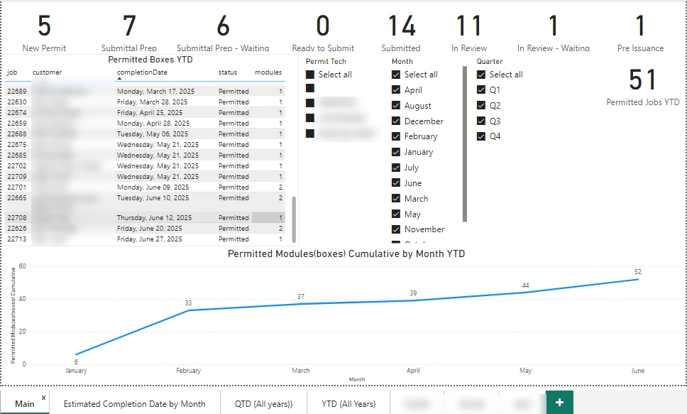

Power BI · DAX time intelligence · Wolf Industries
Approach highlighted
A scorecard that reads in seconds. The top row counts jobs at every permitting stage, so a glance shows where work is piling up, and slicers narrow everything to one technician or one period.
Project Summary
Before a modular home can be built, the job has to be permitted. This report tracks every job through the permitting process, from a new permit through submittal preparation, submission, review and pre-issuance, and counts how many jobs and modules (boxes) have been permitted this year.

How It's Used
Under the Hood
Status counts, year-to-date and quarter-to-date measures live in their own measures table, and a dedicated date table drives the time intelligence, so the cumulative line and the year-over-year pages all use the same calendar.
Skills Demonstrated
Power BI Desktop, DAX measures for status counts, running totals and year-to-date and quarter-to-date comparisons, a date table, page-level filters for individual views, slicers, and scorecard design.
More Power BI reports